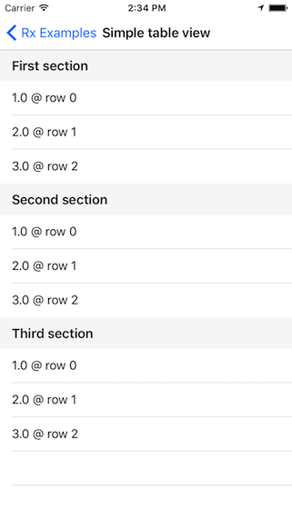
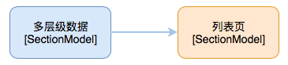
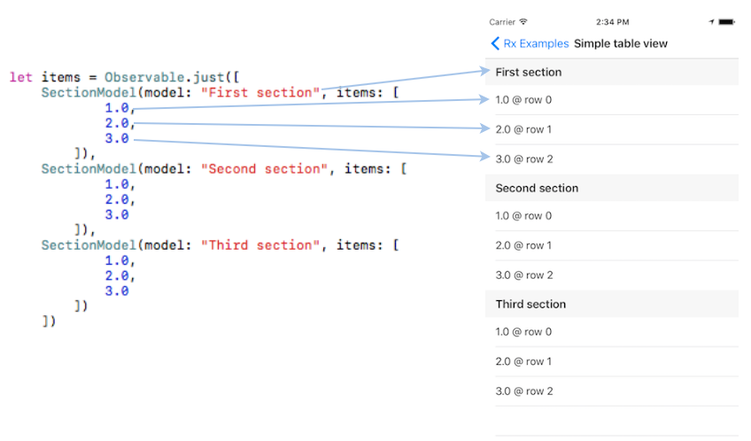

TableViewSectionedViewController - 多层级的列表页

演示如何使用 RxDataSources 来布局列表页，你可以在这里下载这个例子。
简介
这是一个多层级列表页，它主要需要完成这些需求：
- 每个
Section显示对应的标题 - 每个
Cell显示对应的元素以及行号 - 根据
Cell的indexPath控制行高 - 当
Cell被选中时，显示一个弹框
整体结构

以上这些需求，只需要一页代码就能完成：
class SimpleTableViewExampleSectionedViewController
: ViewController
, UITableViewDelegate {
@IBOutlet weak var tableView: UITableView!
let dataSource = RxTableViewSectionedReloadDataSource<SectionModel<String, Double>>()
override func viewDidLoad() {
super.viewDidLoad()
let dataSource = self.dataSource
let items = Observable.just([
SectionModel(model: "First section", items: [
1.0,
2.0,
3.0
]),
SectionModel(model: "Second section", items: [
1.0,
2.0,
3.0
]),
SectionModel(model: "Third section", items: [
1.0,
2.0,
3.0
])
])
dataSource.configureCell = { (_, tv, indexPath, element) in
let cell = tv.dequeueReusableCell(withIdentifier: "Cell")!
cell.textLabel?.text = "\(element) @ row \(indexPath.row)"
return cell
}
dataSource.titleForHeaderInSection = { dataSource, sectionIndex in
return dataSource[sectionIndex].model
}
items
.bind(to: tableView.rx.items(dataSource: dataSource))
.disposed(by: disposeBag)
tableView.rx
.itemSelected
.map { indexPath in
return (indexPath, dataSource[indexPath])
}
.subscribe(onNext: { indexPath, model in
DefaultWireframe.presentAlert("Tapped `\(model)` @ \(indexPath)")
})
.disposed(by: disposeBag)
tableView.rx
.setDelegate(self)
.disposed(by: disposeBag)
}
// to prevent swipe to delete behavior
func tableView(_ tableView: UITableView, editingStyleForRowAt indexPath: IndexPath) -> UITableViewCellEditingStyle {
return .none
}
func tableView(_ tableView: UITableView, heightForHeaderInSection section: Int) -> CGFloat {
return 40
}
}
我们首先创建一个 dataSource: RxTableViewSectionedReloadDataSource<SectionModel<String, Double>>，通过使用这个辅助类型，我们就不用执行数据源代理方法，而只需要提供必要的配置函数就可以布局列表页了。
然后为列表页订制一个多层级的数据源 items: Observable<[SectionModel<String, Double>]>，用这个数据源来绑定列表页。

这里 SectionModel<String, Double> 中的 String 是用来显示 Section 的标题。而 Double 是用来绑定对应的 Cell。假如我们的列表页是用来显示通讯录的，并且通讯录通过首字母来分组。那么应该把数据定义为 SectionModel<String, Person>，然后用首字母 String 来显示 Section 标题，用联系人 Person 来显示对应的 Cell。
示例中后面的两个函数，主要负责配置 Cell 和 SectionHeader：
dataSource.configureCell = { (_, tv, indexPath, element) in
let cell = tv.dequeueReusableCell(withIdentifier: "Cell")!
cell.textLabel?.text = "\(element) @ row \(indexPath.row)"
return cell
}
dataSource.titleForHeaderInSection = { dataSource, sectionIndex in
return dataSource[sectionIndex].model
}
第一个函数 configureCell 是用来配置 Cell 的显示，而这里的参数 element 就是 SectionModel<String, Double> 中的 Double。
第二个函数 titleForHeaderInSection 是用来配置 Section 的标题，而 dataSource[sectionIndex].model 就是 SectionModel<String, Double> 中的 String。
由于 SectionModel<Section, ItemType> 是一个范型，所以我们可以用它来定义任意类型的 Section 以及 Item。
最后:
override func viewDidLoad() {
super.viewDidLoad()
...
tableView.rx
.setDelegate(self)
.disposed(by: disposeBag)
}
...
func tableView(_ tableView: UITableView, heightForHeaderInSection section: Int) -> CGFloat {
return 40
}
这个是用来控制行高的，tableView.rx.setDelegate(self)... 将自己设置成 tableView 的代理，通过 heightForHeaderInSection 方法提供行高。